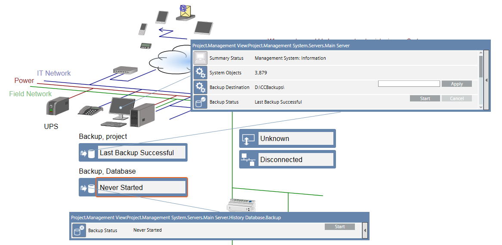

General Tasks
This section contains instructions for starting or shutting down the management station client application, changing your password, or doing an operator switchover.
Launching an Installed Client
Scenario: You want to start the management station on a computer where the management station software is installed as a normal Windows application.
- Start the management station application from the Windows Start button or by clicking the icon on the desktop.
- The logon dialog box displays. You can log on to the system as a management station user or as a Windows user.
- Enter your username and password.
- Select the domain.
- Click Logon.
Exiting the Application
Scenario: You want to quit the management station application.
- In the Summary bar, select Menu > Exit.
- You are logged off and the management station application shuts down.
Interrupting the Auto-Logoff
Scenario: You are working on a management station and your user group was configured for auto-logoff after a period of operator inactivity.
- The logoff message box displays the time remaining before the automatic logoff.
- To stop the logoff, move the cursor or press any key on the keyboard.
- The auto-logoff is interrupted.
Changing Your Password
Scenario: You are logged on as a management station user, and the option to change the user’s password is available in the system menu.
- In the Summary bar, select Menu > Operator > Change User Password.
- The password change window appears.
- Enter the old password and new password.
- Confirm password.
- Click Change Password.
- A message informs you that the changes have been successfully saved.
Doing an Operator Switchover
Scenario: You want to log onto a management station to take over from the currently logged-on operator.
- In the Summary bar, select Menu > Operator > Switchover.
- The Switchover window displays.
- Enter the current user password, your username, password, and domain.
- Click Logon.
- The current user is logged off from the management station application. The system splash screen displays, then the management station application restarts with your user credentials.
Backing up the Project
Scenario: There is a hardware fault. Using a project backup you can easily recreate your project on a new computer.

NOTE:
History data is not saved as part of a project backup. To configure an automated backup of history data, please contact a service engineer.

- In System Browser, select Graphics.
- Click Topology page
 .
. - The topology page opens.
- Right-click the Backup project symbol and select Show Status and Commands.
- (Optional) Change the backup destination and click Apply.
- Click Start.

- The backup status displays
In Progress;Componentfor the component currently backed up;Progressdisplays the backup completion percentage. When the backup is completed, the status changes toLast Backup Successfuland indicates the backup date. The project is available on the server at the given destination path. - After successfully backing up the project data, copy the project file to an external storage medium, such as a server or a DVD. It is recommended to always retain the last three backups.
Technical Notes
- If the backup timeout is exceeded, the backup is aborted and its status displays the error
Last Backup Failed for Timeout Expiration. - If the system crashes during the backup operation, the backup status displays
Last Backup Failed, but the directory containing the interrupted backup is not removed. Remove any failed backup files. See the System Administrator for details.
Backing up the History Database
- In System Browser, select Graphics.
- Click Topology page .
- The topology page opens.
- Right-click the Backup Database symbol and select Show Status and Commands.
- Click Start.
- The backup status displays
In Progress;Componentfor the component currently backed up;Progressdisplays the backup completion percentage. When the backup is completed, the status changes toLast Backup Successfuland indicates the backup date. The history database is available on the server at the given destination path. - After successfully backing up the history database, copy the file to an external storage medium, such as a server or a DVD. It is recommended to always retain the last three backups.
Change the Backup File Destination
- Click
 on the window title bar to quickly switch between the available preset layouts Selection, Primary and Contextual panes.
on the window title bar to quickly switch between the available preset layouts Selection, Primary and Contextual panes. - In the Operation tab, select the Default Backup File property.
- Enter the backup path.
- Click Apply.